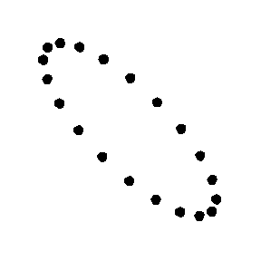
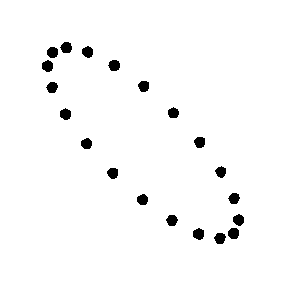

Understanding Gravitational Waves
One of the predictions of GR that has not been directly confirmed is the existence of gravitational waves. Gravitational waves are ripples in space-time that are caused when massive objects move in a certain way. These ripples actually cause objects to shrink and stretch as the wave passes through them, but the effect is tiny — even a very strong gravitational wave will cause an object to shrink and stretch by one part in a quadrillion! (1 quadrillion = 1,000,000,000,000,000)
 

We have very good circumstantial evidence that gravitational waves exist as predicted by GR. Observations of neutron stars (massive, dead stars) that are in binary star systems with another neutron star or white dwarf star show that the stars are slowly getting closer. This happens because these binary systems emit gravitational waves that carry away orbital energy. However, we have never seen the actual shrinking and stretching of space-time caused by a passing gravitational wave because the effect is so tiny and difficult to measure. The goal of NANOGrav is to make just such a detection and to use gravitational waves as a tool for studying the Universe.
Not all gravitational waves are identical. Like light waves, we can characterize a gravitational wave by its frequency (the number of waves that pass by us in one second). NANOGrav is sensitive to very, very low frequency gravitational waves, hence the term "nanohertz" in our name. Even though gravitational waves travel at the speed of light, the waves NANOGrav can detect take a billion seconds to go from one peak to the next (in other words, they have very long wavelengths). NANOGrav and other similar experiments are the only way of studying these types of gravitational waves.


This material is based in part on work supported by the National Science Foundation under Grant Number 968296. Any opinions, findings and conclusions or recommendations expressed in this material are those of the author(s) and do not necessarily reflect the views of the National Science Foundation.